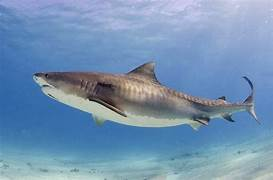
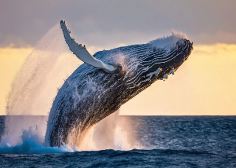
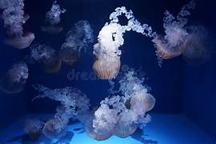
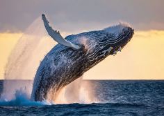
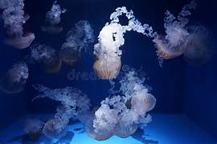
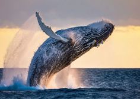
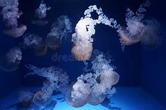

WAYS TO HELP!
Examples of animals:

 



© 2026 Tanya Parks. All rights reserved.
The ocean and its life, supports biodiversity and contributes to global biodiversity. The ecosystems within these waters, are home to a vast array of species. Oceans also play a crucial role in carbon sequestration and climate regulation. Marine life is also a food source for billions of people worldwide. Fisheries and tourism related to marine life contribute significantly to economies. Marine organisms are also a source of new medicines and treatments within our hospitals and medical care. Healthy marine environments provide essential services life water filtration and coastal protection.
Marine life is an important part of our ecosystem within our waters and around the world. If more people were more aware of the consequences of having to live without the marine life, they would do more to protect the ocean and the animals within it. I have been passionate about the ocean ever since I could remember. There are many ways to support the effort to keep our oceans and beaches clean to help protect the animals that call it home..
WAYS TO HELP!


© 2026 Tanya Parks. All rights reserved.